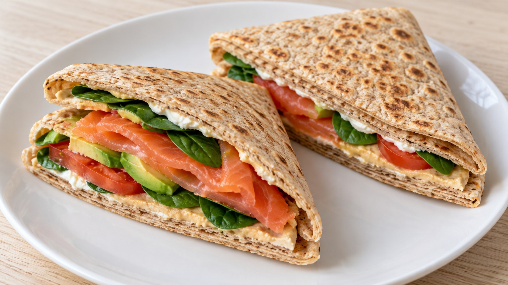
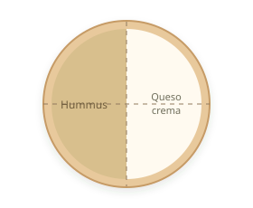
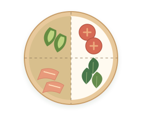
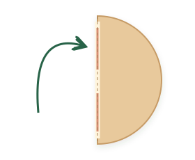
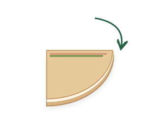

Fajitas de salmón

Ingredientes
- 2 tortillas/piadinas grandes (integrales o de espelta)
- 100 g salmón ahumado
- ½ aguacate mediano
- 150 g tomate
- 40 g espinacas frescas
- 20 g hummus y 20 g queso crema o requesón
Indicaciones
Prepara el relleno. Corta el aguacate y el tomate en rodajas finas y deja escurrir bien el tomate. Lava y seca bien las espinacas; si las hojas son muy grandes, córtalas un poco. Escurrir el tomate y secar las hojas evita que la tortilla se humedezca.
Templa las tortillas. Caliéntalas al menos 30 s por cada lado en una sartén para que se doblen sin romperse.




Toque de sartén opcional. Si te apetece un toque crujiente, pasa las fajitas por una sartén antiadherente sin aceite, alrededor de 1 minuto por cada cara a fuego medio.
Consejo
Si preparas estas fajitas con frecuencia, revisa los ingredientes de las tortillas: muchas llevan estabilizantes, emulgentes y conservadores. Si prefieres una opción sin esos aditivos, puedes usar las piadinas de espelta de Productos preferidos. Caliéntalas antes de doblarlas siguiendo su envase: en estas piadinas, 1 minuto por cada lado.
Fuente
🌿 Adaptada de una receta de Eva, la nutricionista